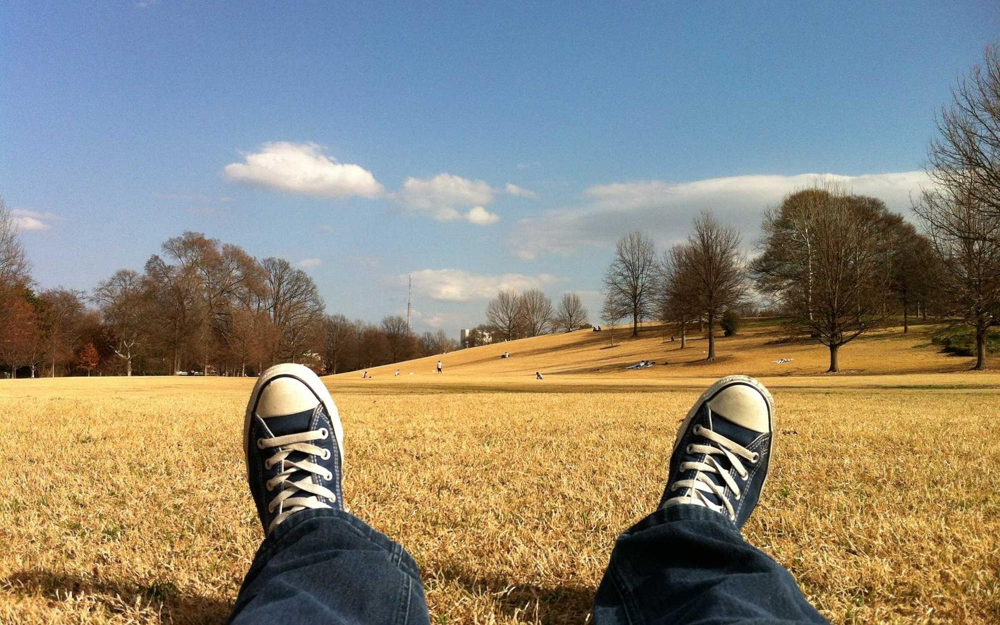
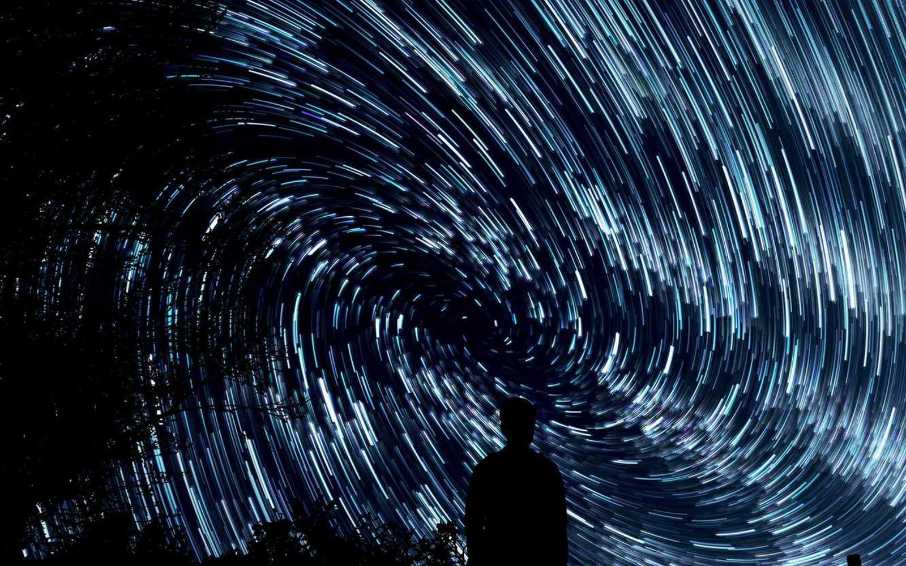
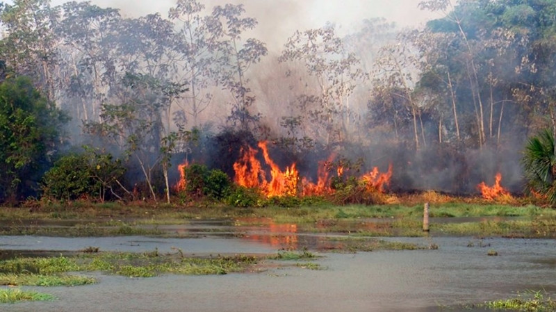
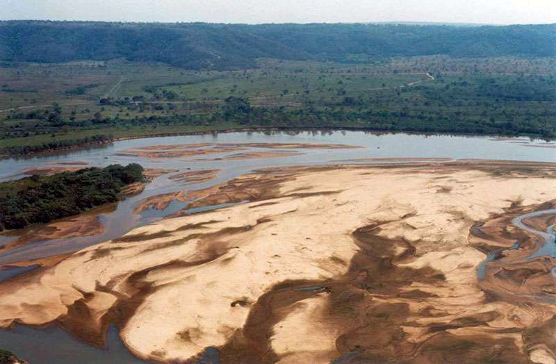
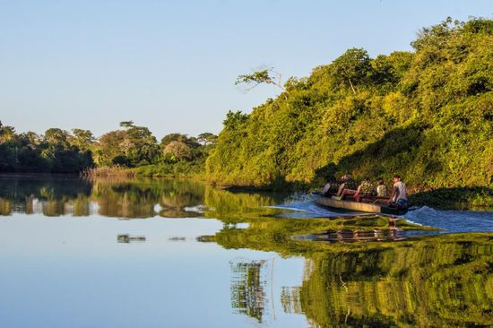

Pantanal






Contexto
O Pantanal é a maior área úmida tropical do mundo, com ciclos anuais de cheias e secas que moldam paisagens, habitats e modos de vida. Em Mato Grosso, abriga rica diversidade de aves, peixes, mamíferos e plantas adaptadas às variações de água.
Desafios de preservação
- Incêndios e queimadas intensificados por seca e manejo inadequado.
- Assoreamento e perda de nascentes nas cabeceiras dos rios.
- Pressões de pesca predatória e atividades agropecuárias.
Fauna e flora
Ícones como o tuiuiú, jacaré-do-pantanal, capivara e onça-pintada convivem com buritizais, gramíneas e plantas aquáticas. A alternância água-terra favorece uma alta produtividade biológica.
Biodiversidade
Altíssima diversidade, especialmente de aves e peixes. Conectividade com Cerrado e Amazônia amplia corredores ecológicos essenciais.